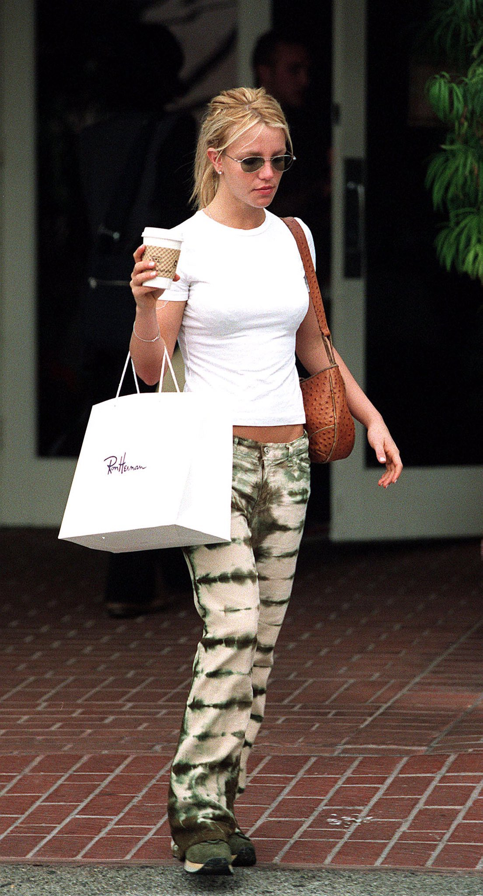
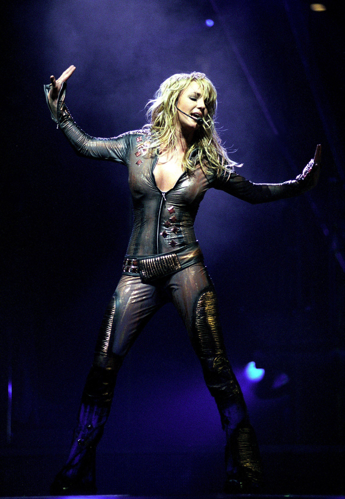
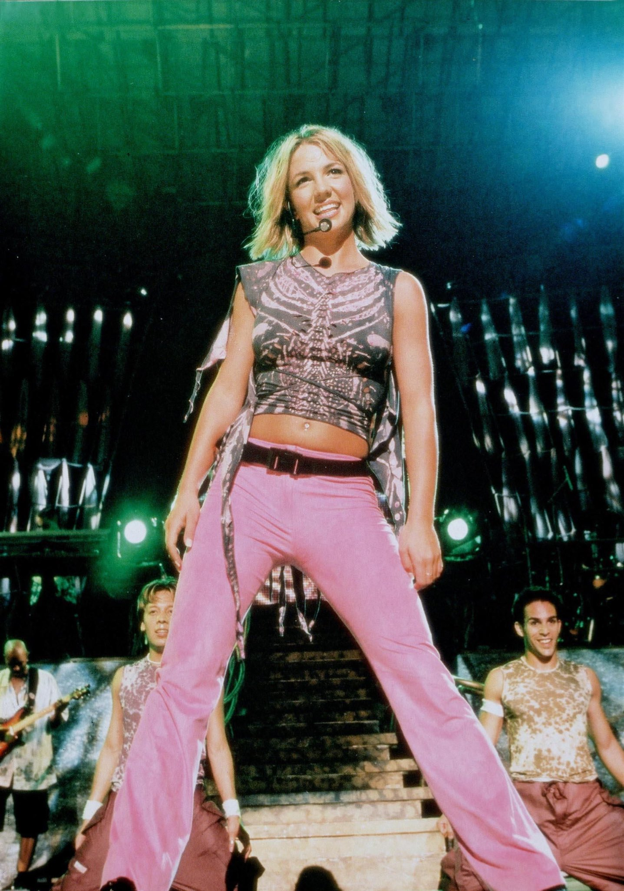
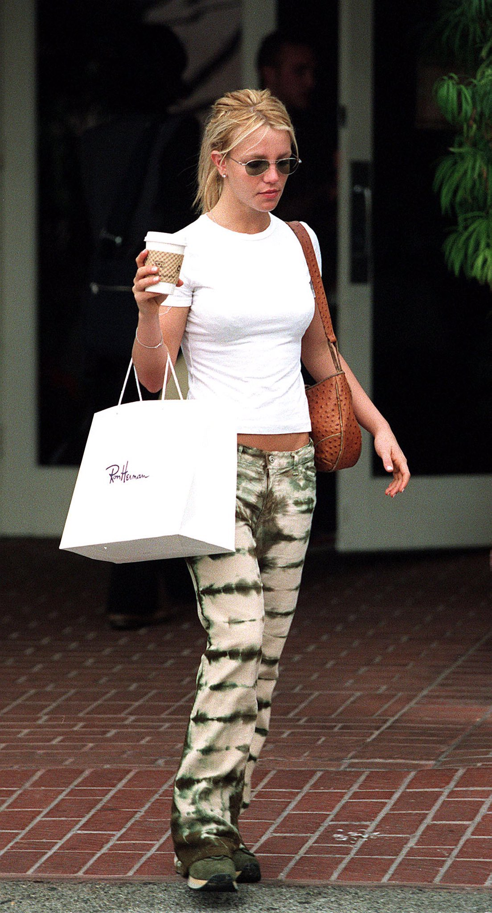
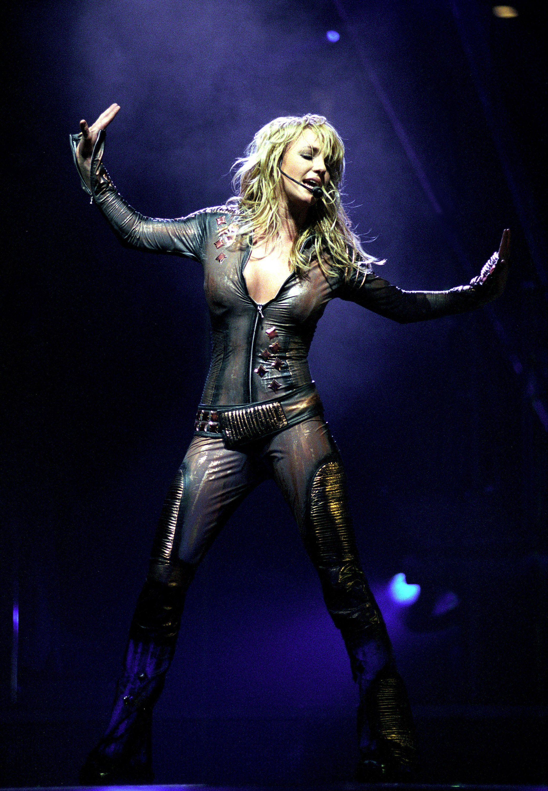
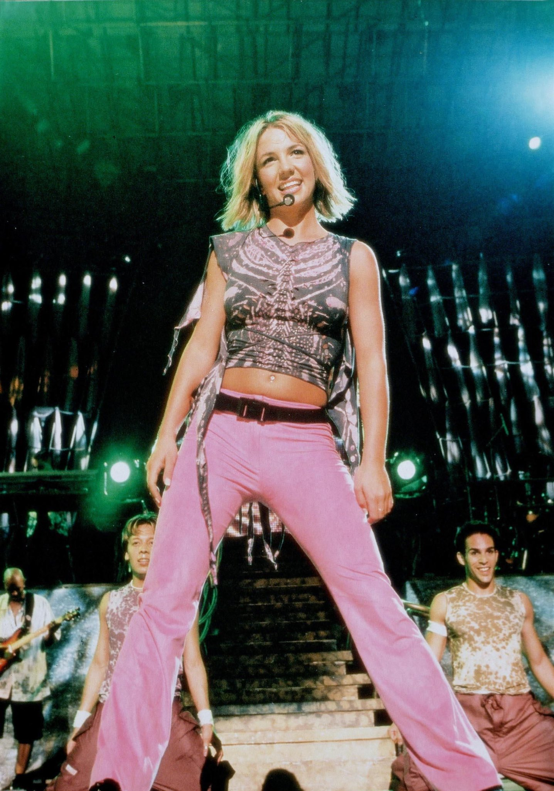
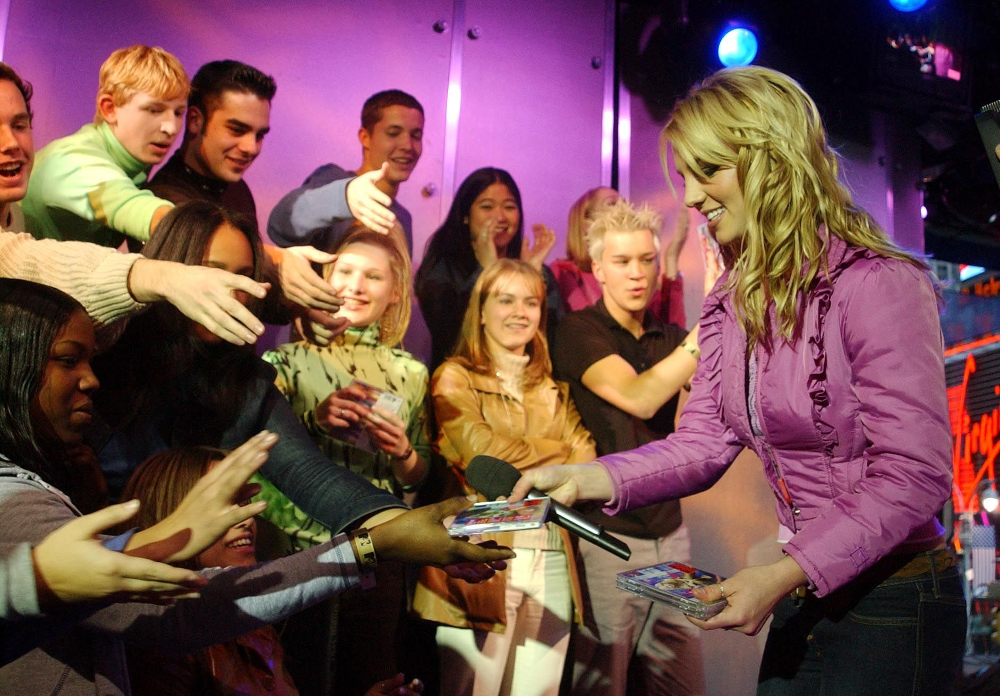
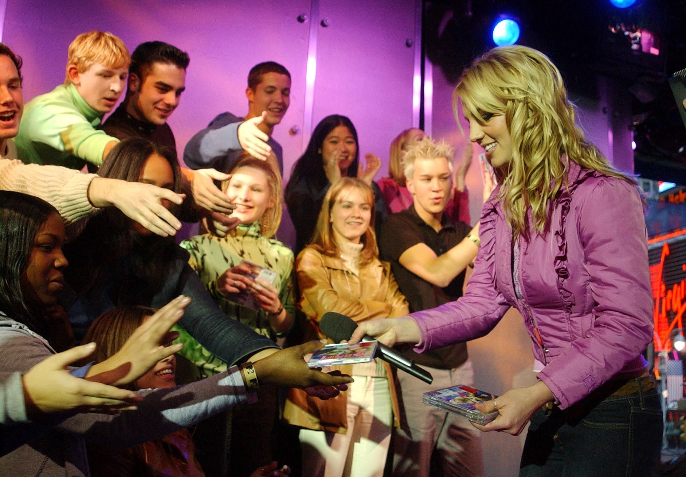

Britney Spears: From Teen Star to Icon
Britney Spears, a pop icon known for her catchy tunes and mesmerizing performances, has captivated audiences worldwide with her incredible talent and charismatic stage presence. Born on December 2, 1981, in McComb, Mississippi, Britney showed an early passion for music and dance. She rose to fame in the late 1990s with her debut single "Baby One More Time," which became an instant hit and catapulted her to stardom.
With her infectious energy and relatable lyrics, Britney quickly became a teenage sensation. Her music videos, featuring iconic choreography and memorable outfits, became a hallmark of the 2000s pop culture. Throughout her career, she released numerous chart-topping albums, including "Oops!... I Did It Again" and "Britney," solidifying her status as one of the best-selling female artists in the industry.
Apart from her musical achievements, Britney Spears is also recognized for her resilience. She faced personal challenges in the public eye but managed to overcome them, inspiring her fans with her strength and determination. Britney's impact on the music industry and her ability to connect with people through her music make her a beloved artist for fans of all ages.

 
